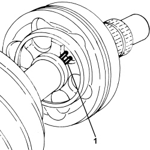
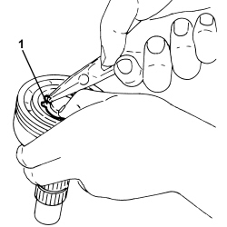
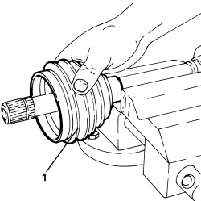

2720D16 WHEEL SIDE CONSTANT VELOCITY JOINT (ONE), LEFT OR RIGHT - R.R. WITH DRIVESHAFT REMOVED - INCLUDES BOOT REPLACEMENT
- Path
- Procedures > 27 AXLE > 2720 REAR AXLE CASING -SEMISHAFT AND DIFFERENTIAL > 2720D REAR AXLE DRIVESHAFTS AND JOINTS > 2720D16 WHEEL SIDE CONSTANT VELOCITY JOINT (ONE), LEFT OR RIGHT - R.R. WITH DRIVESHAFT REMOVED - INCLUDES BOOT REPLACEMENT
- Kind
- repair procedure (removal / refitting; the operation number is the code)
- Applies to
- engines: 3.2 JTS; all production periods
- Interactive page
- https://sloeber94.github.io/elrnDB-aBrrSpdr/en/#/946002108
Applies to: engines: 3.2 JTS; all production periods
 Removing
Removing
 Refitting
Refitting- Position the driveshaft in a vice fitted with protective jaws.
1. Remove the protective boot retaining bands.

Applies to: engines: 3.2 JTS; all production periods
1. Retract the protective boot on the driveshaft.

Applies to: engines: 3.2 JTS; all production periods
1. Clean the driveshaft constant velocity joint until the safety ring is accessible.

Applies to: engines: 3.2 JTS; all production periods
1. Extend the safety ring using suitable pliers.
2. Extract the wheel side constant velocity joint from the driveshaft.

Applies to: engines: 3.2 JTS; all production periods
1. Remove the wheel side constant velocity joint safety ring.

Applies to: engines: 3.2 JTS; all production periods
1. Remove the protective boot.

Applies to: engines: 3.2 JTS; all production periods
Refitting
Removing- Wash the constant velocity joint components thoroughly using diesel oil or petrol and visually inspect that there are no signs of seizing or grooves on the balls or seats.
- Position the new protective boot on the driveshaft.
- Place a new safety ring in the housing on the constant velocity joint.
- Place the wheel side constant velocity join in its housing on the driveshaft.
- Fill the joint and the boot with the specified grease.
Component | Type | Description | Classification | Qty. | Validity |
|---|---|---|---|---|---|
Wheel side constant velocity joint | Grease (g) | TUTELA STAR 500 | NLGI 2 | 203 | 2.2 JTS 3.2 JTS |
- Place the boot in position on the constant velocity joint and on the driveshaft.
- Fit two new bands securing the boot.
- Remove the driveshaft from the vice.